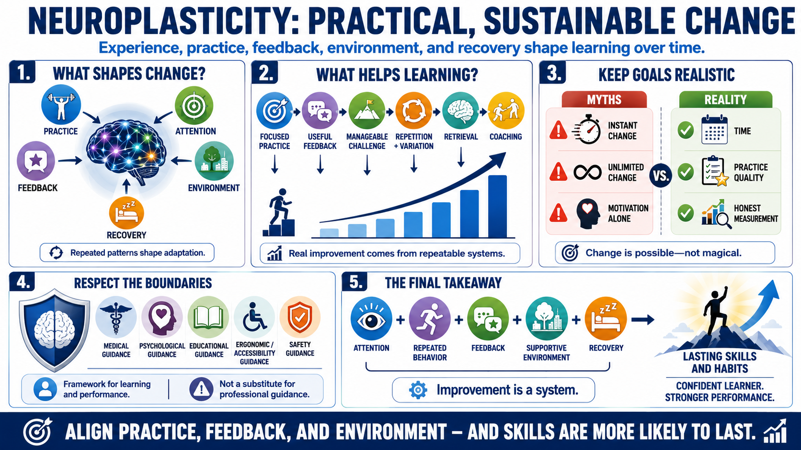

Course Summary and Key Takeaways
Connecting to LMS... Progress: in progress

Narration
Neuroplasticity explains how experience, practice, attention, feedback, environment, and recovery can shape learning and behavior over time. The nervous system adapts to repeated patterns, but the direction and usefulness of that adaptation depend on what is practiced, how feedback is used, and what the environment repeatedly requires.
Strong application requires realistic goals and honest measurement. Change is not instant, unlimited, or guaranteed by motivation alone. It is supported by focused practice, useful feedback, manageable challenge, repetition with variation, retrieval, environmental design, coaching, and recovery. These ingredients help people build capability in a way that is practical rather than mystical.
The course also emphasized boundaries. Neuroplasticity is real, but it should not be used to sell exaggerated promises, unsafe routines, or unsupported claims. This course does not replace medical, psychological, educational, ergonomic, accessibility, or safety guidance. It gives a learning and performance framework for thinking about adaptation responsibly.
The final takeaway is that improvement is a system. The goal is not magical self-reprogramming. The goal is practical, sustainable change through repeated behavior, focused attention, feedback, and environments that support the desired pattern. When those pieces are aligned, people are more likely to build skills and habits that last.